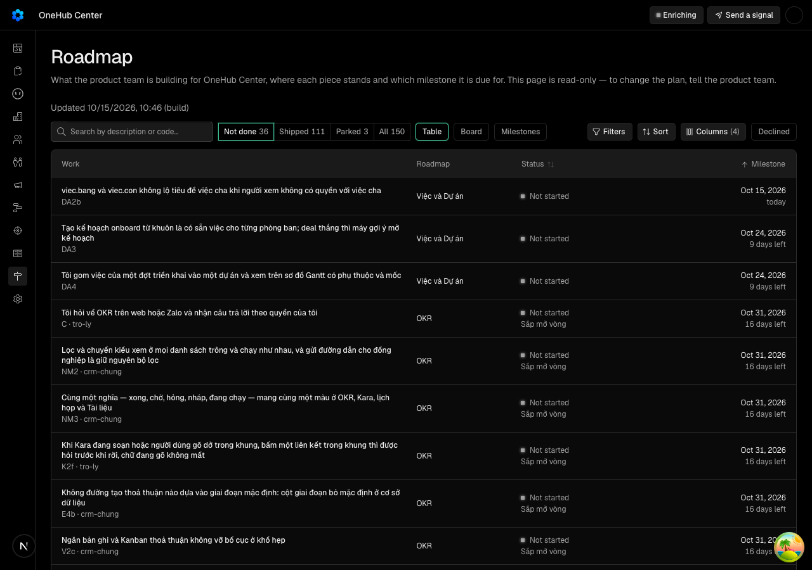
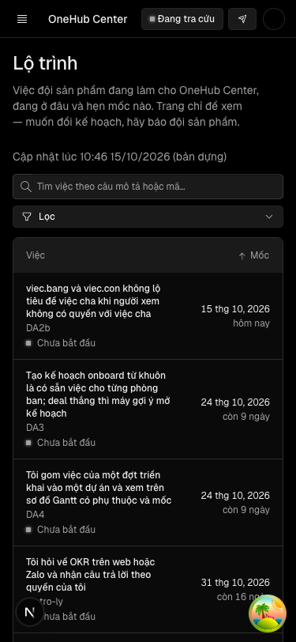
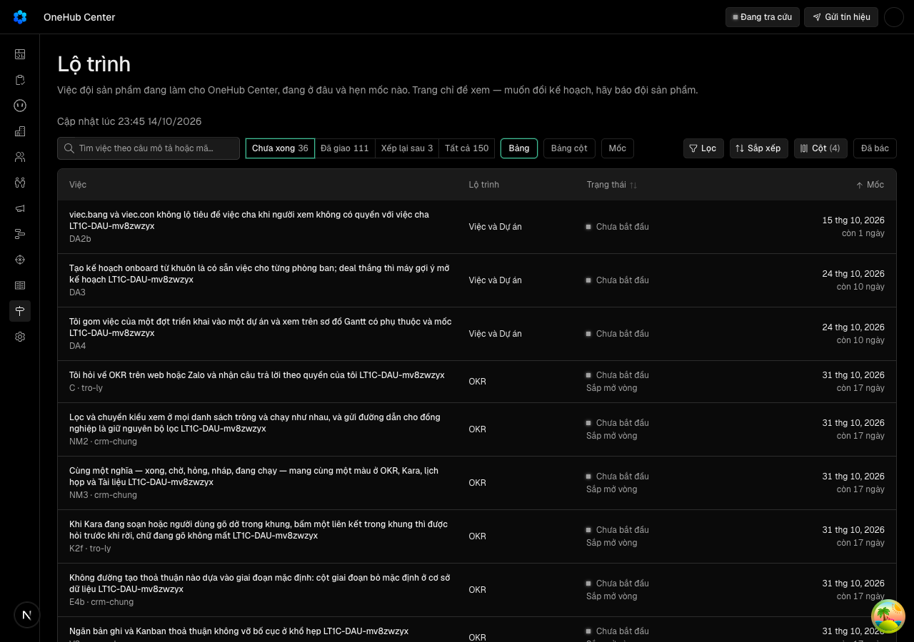
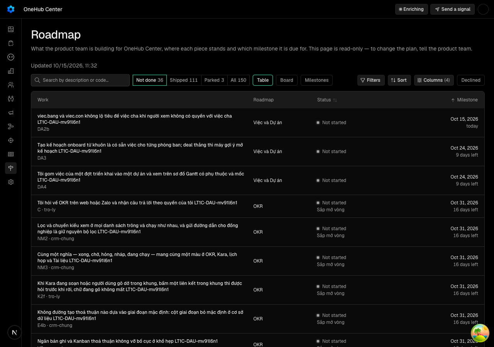
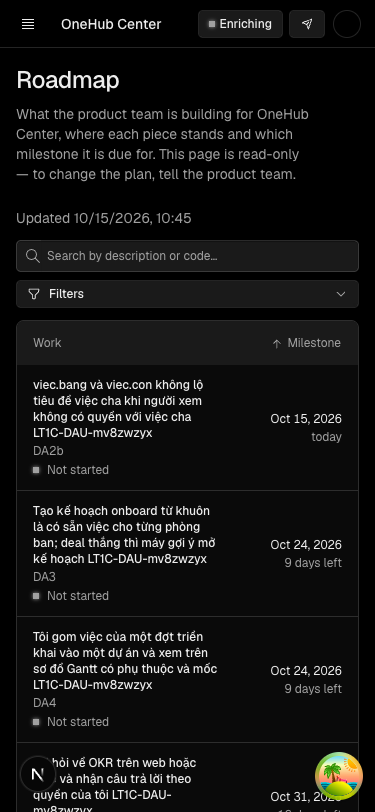
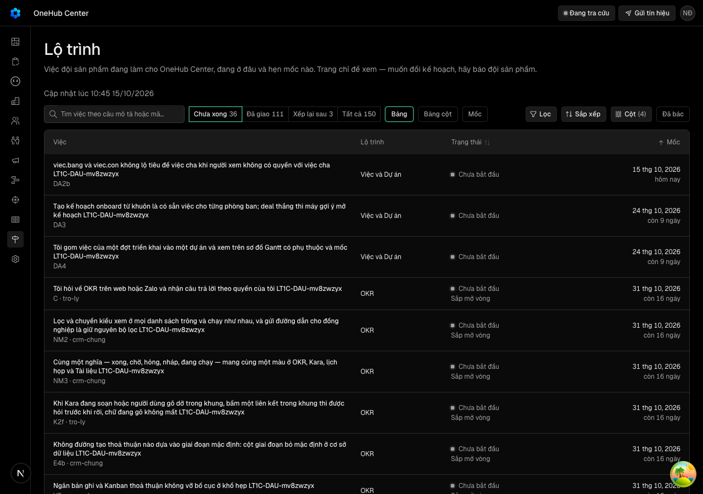
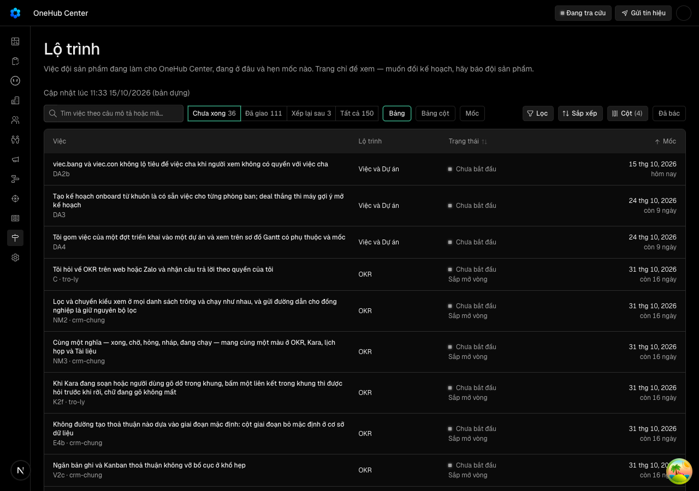
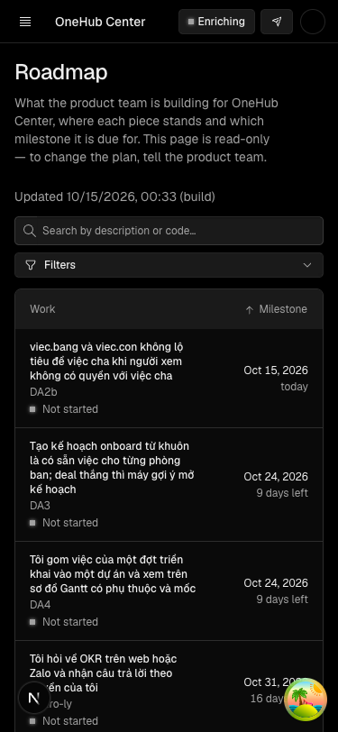
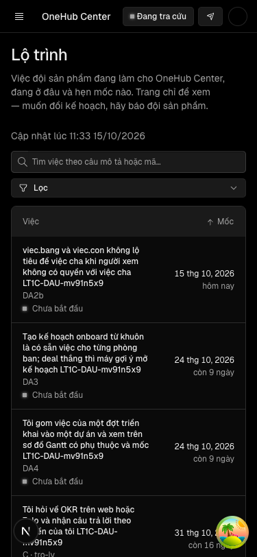
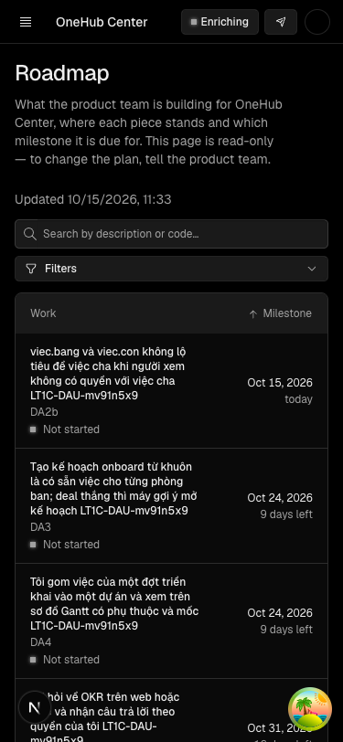

Trưởng phòng ban mở trang Lộ trình và thấy đúng lộ trình mới nhất của nhánh chính, kèm giờ lấy, mà trang không phải chờ một bản dựng production
Vì sao làm
Trang hôm nay đọc tệp đóng gói lúc dựng, nên chỉ đọc được đúng một kho. Với riêng kho CRM, đọc bản chụp chỉ bớt được vài phút dựng và tách trang khỏi cửa sổ gộp; giá trị chính là làm nền cho lộ trình nhiều sản phẩm (LT3).
Đã hứa
- AC-1 — Given chủ kho đã tạo khoá «Đẩy lộ trình» và đặt nó làm bí mật GitHub, When một lần gộp vào nhánh chính đổi lộ trình và lượt Actions chạy xong, Then CRM giữ đúng một bản chụp cho nguồn `crm` mang sha, giờ commit và giờ lấy của lần gộp đó cùng nguyên khối dữ liệu (kể cả phần trang chưa đọc như danh sách tín hiệu), lượt Actions để lại một ghi chú nói kết quả của lượt (nhận, trùng, cũ hơn, chưa cài), và trang Lộ trình hiện nội dung của bản chụp ấy trong vòng một nhịp làm mới mà không cần dựng lại app. (cross-layer)
- AC-2 — Given các khoá: khoá «Đẩy lộ trình» còn hiệu lực của chủ hay quản trị, khoá thường, khoá chỉ-kéo tín hiệu, khoá «Đẩy lộ trình» đã thu hồi, khoá «Đẩy lộ trình» của người đã bị gỡ khỏi không gian làm việc, và của người đã bị hạ xuống thành viên, When mỗi khoá gửi một bản chụp hợp lệ, Then chỉ khoá đầu được nhận, mọi khoá còn lại bị từ chối mà bản chụp đang lưu không đổi; và khoá «Đẩy lộ trình» không mở được thủ tục nào khác (tRPC, cầu REST, phiên web). Chỉ chủ hay quản trị tạo được loại khoá này. (cross-layer)
- AC-3 — Given một bản chụp gửi đến hỏng — khối không qua khuôn lộ trình, khuôn lạ, thiếu sha hay giờ commit, hoặc lớn quá trần — When máy chủ nhận nó, Then nó bị từ chối nguyên khối với lời nói đúng chỗ hỏng, bản chụp đang lưu không đổi, và kịch bản đẩy thoát khác 0 để lượt Actions đỏ.
- AC-4 — Given CRM đang giữ bản chụp của một commit, When một bản chụp của commit cũ hơn hoặc cùng sha đến sau (lượt Actions chạy lệch thứ tự, chạy lại), Then bản chụp đang lưu không bị thay, máy chủ trả «cũ hơn» hay «trùng», và kịch bản đẩy thoát 0.
- AC-5 — Given chưa có bản chụp nào (chưa cài khoá), hoặc kho dữ liệu không đọc được, hoặc hàng đang lưu không qua khuôn lộ trình, When người xem mở trang Lộ trình, Then trang hiện lộ trình từ tệp đóng gói như hôm nay, không có màn lỗi, và máy chủ ghi một dòng cảnh báo; và khi bí mật GitHub chưa đặt, lượt Actions kết thúc xanh kèm một dòng nhắc chưa cài.
- AC-6 — Given một bản dựng đang chạy và một bản chụp, When trang chọn nguồn, Then trang dùng bản chụp khi bản chụp cùng sha với bản đang chạy hoặc commit của nó sau giờ bắt đầu dựng, và dùng tệp đóng gói trong mọi ca còn lại — bản chụp cũ hơn, ca mơ hồ, và mọi bản Preview — nên trang không bao giờ hiện lộ trình cũ hơn bản đang chạy.
- AC-7 — Given người xem ở 1280 px và 375 px, tiếng Việt và tiếng Anh, When trang đọc bản chụp và khi trang rơi về tệp đóng gói, Then trang hiện một dòng nói lộ trình được cập nhật lúc nào theo múi giờ của trình duyệt người xem (không theo múi giờ máy chủ), ca rơi về tệp đóng gói nói rõ là bản dựng, dòng ấy không làm trang cuộn ngang, và dữ liệu lộ trình không bị dịch. (cross-layer)
- AC-8 — Given bản chụp mang tóm tắt hồ sơ chỉ chủ kho được xem, When chủ, quản trị, thành viên và người chỉ OKR mở trang Lộ trình đọc bản chụp, Then chỉ chủ thấy phần số liệu của chủ kho, đúng như khi trang đọc tệp đóng gói.
- AC-9 — Given hai tuần sau khi giao, When chủ kho chạy lệnh đo độ trễ, Then lệnh in mỗi lần nhánh chính đổi lộ trình một dòng — giờ commit, giờ lượt đẩy xong, độ trễ — chỉ coi là đã đẩy những lượt có ghi chú nhận hay trùng, coi lần đổi có lượt bị huỷ vì lượt mới hơn thế chỗ là được phủ bởi lượt ấy, đánh cờ lần trễ quá 10 phút và khoảng trang đứng ở bản cũ quá một giờ, và một dòng kết luận đạt hay không đạt theo ngưỡng của Cổng Đáng.
Thiết kế
docs/superpowers/specs/2026-10-14-lo-trinh-doc-ban-chup-design.md
Quyết định
- 2026-10-14 · Máy · approach · S1 — GitHub Actions đẩy bản chụp sang CRM mỗi khi nhánh chính đổi lộ trình; CRM không tự kéo từ GitHub.Kho riêng tư nên kéo cần khoá cá nhân, mà ghi chú hàng LT3 cấm khoá cá nhân; đẩy dùng khoá máy của CRM và LT3 thay người đẩy bằng ứng dụng GitHub (design doc mục Phương án đã cân).
- 2026-10-14 · Máy · approach · S1 — Lưu bản chụp trong một bảng dữ liệu, một hàng mỗi nguồn; không dùng kho tệp Vercel Blob.App chưa đọc Blob ở đâu, kho công khai chưa có khoá trên production và kho riêng chỉ có khoá trên API/agent (docs/production.md mục Kho Blob); bảng chỉ cần một migration.
- 2026-10-14 · Máy · approach · S1 — Dùng một loại khoá máy thứ ba theo khuôn khoá chỉ-kéo của TH1, nên chỉ viết mã sau khi TH1 (#404) gộp; không dùng bí mật dùng chung kiểu điểm nhận /internal.Khoá tạo và thu hồi trong Cài đặt, gắn người giữ và đọc lại vai mỗi lần gọi; bí mật dùng chung cần đặt biến trên Vercel rồi dựng lại, và docs/api.md coi điểm nhận thứ ba là một quyết định riêng.
- 2026-10-14 · Máy · approach · S1 — Lưu nguyên khối dữ liệu đã qua kiểm, kể cả phần trang chưa đọc như danh sách tín hiệu; không lưu bản đã lột khoá lạ.TH3 đọc trạng thái tín hiệu từ cùng bản chụp, và khuôn zod của trang lột mất khoá tin_hieu (packages/validation/src/lo-trinh-du-lieu.ts).
- 2026-10-14 · Máy · approach · S1 — Trang dùng bản chụp chỉ khi cùng sha với bản đang chạy hoặc commit sau giờ bắt đầu dựng, còn lại đọc tệp đóng gói; bản Preview luôn đọc tệp đóng gói. Không giữ lịch sử sha để so.Nhánh onehub gộp nối tiếp nên hai mốc đó đủ để không bao giờ lùi; Preview dùng chung kho dữ liệu với production (docs/production.md).
- 2026-10-14 · Máy · descope · S1 — KHÔNG làm lịch sử bản chụp, nút làm mới hay màn trạng thái đường đẩy.Chủ kho đọc lượt Actions và lệnh đo độ trễ (AC-9); một màn trạng thái là việc của LT3 khi có nhiều nguồn.
- 2026-10-14 · Máy · approach · S1 — Chạy design-pass nhẹ: một bản mẫu hai trạng thái của dòng giờ lấy trên khung trang Lộ trình, chụp 1280 và 375, không đồng bộ.Việc chạm giao diện ở một dòng chữ và một lựa chọn loại khoá; Cổng Phạm vi duyệt chữ và vị trí trên bản bấm được thay vì bằng chữ.
- 2026-10-14 · Máy · descope · S1 — bỏ cảnh ngữ-cảnh — bản mẫu đã dựng trong khung trang Lộ trình thật của LT1, đường vào và ra không đổi.Việc chỉ thêm một dòng chữ phụ đầu vùng nội dung (design-pass.md); không có màn hay luồng mới để kể vào–ra.
- 2026-10-14 · Người · seal · gate1 —
- 2026-10-14 · Máy · approach · gate1 — duyệt · mốc: mới 16/10Chủ kho chốt tại Cổng Phạm vi theo quy ước «mỗi vòng thuộc đúng một mốc» (crm-onehub#375 comment 6163984111): LT1c vào mốc mới «Lộ trình nhiều sản phẩm — bước 1: trang đọc bản chụp» ngày 16/10, không gộp vào m-1016; giữ «(bản dựng)» và hai giả định trên thẻ không bị gạch.
- 2026-10-14 · Máy · approach · S2 — Làm Task 1, 4, 5, 6, 7 ngay sau duyệt kế hoạch, chỉ Task 2, 3, 8 (khoá, đường nhận, kiểm cả kho) chờ TH1 #404 gộp; không chờ TH1 cho cả vòng.Năm task đó không chạm mã TH1 (bảng «Thứ tự và phụ thuộc» của kế hoạch), nên làm trước giữ được mốc 16/10 dù TH1 trễ một lô.
- 2026-10-14 · Máy · approach · S2 — Khai hai chỗ đọc khoá mới vào bảng miễn của phép đo đường-đọc-khoá trong hồ sơ TH1 và ghim lại hồ sơ TH1 một lần trước S5; không tách phép đo riêng cho LT1c.Phép đo của TH1 (_acceptance/tin-hieu-tu-ve-kho/rang/duong-doc-khoa.mjs) đòi mọi chỗ đọc khoá trong kho có ô, nên khoá mới làm nó đỏ nếu không khai.
- 2026-10-14 · Máy · approach · S2 — Chỉ nâng trần thân yêu cầu của cầu REST lên 2 MB nếu lần gửi khối thật bị từ chối; không thêm đường nhận riêng ngoài cầu REST.Trần mặc định của trpc-to-openapi chưa đo; khối thật khoảng 216 KB; một đường nhận riêng là điểm nhận thứ ba docs/api.md coi là quyết định riêng.
- 2026-10-14 · Máy · revisit · S2 — Bảng chỗ đọc khoá đang sống trong hồ sơ TH1, nên mỗi vòng sau thêm một loại khoá lại phải ghim lại hồ sơ TH1; dời bảng sang mã sản phẩm (một nguồn trong apps/api) khi có vòng thứ hai phải sửa bảng này.Điều phối đặt bốn điều kiện 14/10 cho việc LT1c sửa bảng của TH1 (chỉ sửa bảng, sau khi #404 gộp, ghim lại tại HEAD, pre-merge không kèm --slug); bảng nằm ở _acceptance/tin-hieu-tu-ve-kho/rang/bang-duong-doc-khoa.json.
- 2026-10-14 · Máy · approach · gate1.5 — duyệt kế hoạchChủ kho (Manh Phan) duyệt kế hoạch 8 việc 14/10 kèm bốn điều kiện của điều phối cho bảng chỗ đọc khoá TH1 (docs/superpowers/plans/2026-10-14-lo-trinh-doc-ban-chup.md, commit 261a3e977); thi công tuần tự trong phiên.
- 2026-10-15 · Máy · fix · S3 — Ô chọn loại khoá giữ nếp đã ký của TH1: chỉ chủ và quản trị thấy ô, thành viên không thấy lựa chọn «Đẩy lộ trình» (thay vì thấy bị khoá kèm lý do như E5 viết lúc Cổng Phạm vi); máy chủ vẫn trả 403.TH1 đã ký Cổng Bằng chứng với ô loại khoá ẩn cho người không phải quản trị và test tvk-man ghim đúng điều đó (apps/app/test/khoa-api-loai.dom.tsx); đổi sang hiện-mà-khoá là sửa hành vi của một hồ sơ đã ký ngoài phạm vi LT1c.
- 2026-10-15 · Máy · fix · S3 — Sửa test tvk-man của TH1 từ 2 lên 3 lựa chọn loại khoá.Thêm loại khoá thứ ba làm ca «radio.length toBe(2)» của TH1 đỏ; ca đó là test ứng dụng, hồ sơ TH1 sẽ ghim lại trong PR này theo điều kiện của điều phối.
- 2026-10-15 · Máy · approach · S3 — packages/db không phụ thuộc @crm/validationhàm ghi khai kiểu đầu vào GhiBanChup tại chỗ (duLieu: Prisma.InputJsonObject), khuôn đổi duLieu sang z.record(z.string(), z.json()) để kiểu khớp
- 2026-10-15 · Máy · approach · S3 — DauVaoLoTrinh.co-du-lieu thêm nguon TUỲ CHỌN (không bắt buộc)giữ nguyên test LT1 và dữ liệu bản mẫu cũ; dòng giờ chỉ hiện khi có nguon
- 2026-10-15 · Máy · approach · S3 — ketQuaTuHang (thuần) đặt ở doc-trang.ts để test được không cần DB; doc-ban-chup.ts chỉ đọc DB + cache
- 2026-10-15 · Máy · approach · S3 — sửa test khuôn của Task 1 cho qua lint:slop (bỏ Record<string, unknown>)
- 2026-10-15 · Máy · approach · S3 — không sửa dữ liệu bản mẫu LT1/LT1b (nguon tuỳ chọn); bản mẫu LT1c dùng thành phần thật
- 2026-10-15 · Máy · approach · S3 — task-done ghi trước khi chạy messages-guard; ca đỏ «gioLay.capNhat chưa ghim» là của tôi, sửa ở 4ad.. (ghim vi)
- 2026-10-15 · Máy · approach · S3 — test và kịch bản không nhập zod trực tiếp (scripts/ không phân giải được zod)workflow đọc bằng Bun.YAML + kiểu khai tay; khuôn vào/ra vẫn qua banChupVao/banChupRa của packages/validation
- 2026-10-15 · Máy · approach · S3 — workflow dùng bun install --frozen-lockfile như TH1, checkout nông (chỉ cần commit HEAD)
- 2026-10-15 · Máy · approach · S3 — lượt Actions chưa có createdAt trong kiểu Luotphá-thử «tính từ lúc bắt đầu» thay bằng «bỏ nhịp làm mới» (cùng lớp: trễ thiếu một vế)
- 2026-10-15 · Máy · approach · S3 — ghi chú của lượt đọc qua job id = check-run id (gh run view --json jobs), mẫu JSON là bản thật của gh lưu ở test/mau
- 2026-10-15 · Máy · approach · S3 — thử gộp tạm nhánh TH1 (9ff88ba11) để làm sớm việc 2–3 → 5 tệp xung đột (LO-TRINH.html, PRODUCT-MAP.md, CONTEXT.md, config.yaml, registry.ts)huỷ gộp, chờ #404 gộp onehub như kế hoạch
- 2026-10-15 · Máy · approach · S3 — giữ nếp đã ký của TH1ô loại khoá ẩn với người không phải quản trị (E5 dòng 2 sửa theo, sổ d-…-16)
- 2026-10-15 · Máy · approach · S3 — không thêm trường taoDuocDayLoTrinhgiao diện dùng chung cờ quản trị taoDuocKeoTinHieu của TH1; thêm configKhoaMay cho thu hồi
- 2026-10-15 · Máy · approach · S3 — bảng chỗ đọc khoá TH1 sửa ở Task 3 (khi middleware có)
- 2026-10-15 · Máy · approach · S3 — cầu REST mặc định chặn khối 216 KB (413)đặt maxBodySize = BAN_CHUP_LO_TRINH.tranThanByte (2 MB) cho cả cầu REST, như sổ S2
- 2026-10-15 · Máy · approach · S3 — lời từ chối khuôn đọc từ trường issues của trpc-to-openapi (message cố định «Input validation failed»); kịch bản đẩy in đường khoá từ issues
- 2026-10-15 · Máy · approach · S3 — fixture spec API rút khối thô từ LO-TRINH.html bằng regex (apps/api không có kiểu cho doc-du-lieu.js), không viết tay
- 2026-10-15 · Máy · approach · S3 — k6 gỡ người bằng workspace.removeMember thật (khoá bị tắt → 401), không xoá hàng member
- 2026-10-15 · Máy · fix · S3 — Biên chờ bản chụp hiện trên trang ở phép đo màn nới từ nhịp + 15 giây lên nhịp + 30 giây (bước tải lại 10 giây cộng thời gian tải trang); nhịp làm mới 60 giây của trang không đổi.Lượt đo thật 15/10 thấy bản chụp hiện sau 70 giây với trần 75 giây; phép đo tải lại mỗi 10 giây nên riêng bước chờ đã có thể vượt 15 giây dưới tải S4 (rang/do-man.mjs).
- 2026-10-15 · Máy · fix · S4-r1 — Sửa sáu phép đo yếu và lỗi múi giờ của suite trong một lượt: test giờ lấy tự đặt múi New York; đo đầu ra banDungHienTai và next.config thay vì đọc mã; chạy thật khối chính của kịch bản đẩy; cho lệnh đo đi qua đường ghép gh thật; thêm đối chứng dương cho khoá Đẩy; so nguyên đường khoá hỏng; ô bản dựng đo cùng một mốc giờ ở mọi múi.S4 vòng 1 REJECT: suite app đỏ vì lo-trinh-ban-chup.dom.tsx đòi TZ của tiến trình, và sáu finding trong hợp đồng t5, t6, t7, t9, t10, t12 (review-findings.md) cùng chỉ phép đo không đo quan hệ hay thiếu đối chứng; đối chứng dương còn lộ ra đường REST api-keys không nhận khoá API nên được thay bằng contacts/search.
- 2026-10-15 · Máy · fix · S4-r2 — Cập nhật phép phá-thử của LT1b (apps/app/test/ngan-ho-so-vai.dom.tsx) theo lời gọi mới docDauVaoChoVai(vai, …) của trang Lộ trình, giữ nguyên hai bản sao bị phá (bỏ lọc vai, đẩy khối thô kèm vai xuống khách) và lời khẳng định lộ số liệu chủ kho; hồ sơ LT1b sẽ ghim lại trong PR này cùng hồ sơ TH1.S4 vòng 2 REJECT vì finding t3 trong hợp đồng (AC-8): test tìm đúng chuỗi choVaiXem(await docDauVao(), vai) mà LT1c đã thay; vòng 1 không thấy vì bộ chạy tệp dom dừng ở tệp đỏ đầu tiên (lo-trinh-ban-chup.dom.tsx).
Bằng chứng
Các eval
| Eval | Tiêu chí | Loại | Verdict | run_id | verified_at |
|---|---|---|---|---|---|
| E1 | AC-1 | test | PASS | minted-lo-trinh-doc-ban-chup-E1-r2 | 2026-10-15T04:09:22Z |
| E2 | AC-1 | test | PASS | minted-lo-trinh-doc-ban-chup-E2-r2 | 2026-10-15T04:09:22Z |
| E3 | AC-1 | ui-check | PASS | minted-lo-trinh-doc-ban-chup-E3-r2 | 2026-10-15T04:09:22Z |
| E3b | AC-7 | ui-check | PASS | minted-lo-trinh-doc-ban-chup-E3b-r2 | 2026-10-15T04:09:22Z |
| E4 | AC-2 | test | PASS | minted-lo-trinh-doc-ban-chup-E4-r2 | 2026-10-15T04:09:22Z |
| E5 | AC-2 | test | PASS | minted-lo-trinh-doc-ban-chup-E5-r2 | 2026-10-15T04:09:22Z |
| E6 | AC-3 | test | PASS | minted-lo-trinh-doc-ban-chup-E6-r2 | 2026-10-15T04:09:22Z |
| E7 | AC-3 | test | PASS | minted-lo-trinh-doc-ban-chup-E7-r2 | 2026-10-15T04:09:22Z |
| E8 | AC-4 | test | PASS | minted-lo-trinh-doc-ban-chup-E8-r2 | 2026-10-15T04:09:22Z |
| E9 | AC-5 | test | PASS | minted-lo-trinh-doc-ban-chup-E9-r2 | 2026-10-15T04:09:22Z |
| E10 | AC-5 | test | PASS | minted-lo-trinh-doc-ban-chup-E10-r2 | 2026-10-15T04:09:22Z |
| E11 | AC-6 | test | PASS | minted-lo-trinh-doc-ban-chup-E11-r2 | 2026-10-15T04:09:22Z |
| E12 | AC-7 | test | PASS | minted-lo-trinh-doc-ban-chup-E12-r2 | 2026-10-15T04:09:22Z |
| E13 | AC-7 | script | PASS | design-gate-ebf1de8e23, design-gate-a42802ab47 | 2026-10-15T04:09:22Z |
| E14 | AC-7 | test | PASS | minted-lo-trinh-doc-ban-chup-E14-r2 | 2026-10-15T04:09:22Z |
| E15 | AC-8 | test | PASS | minted-lo-trinh-doc-ban-chup-E15-r2 | 2026-10-15T04:09:22Z |
| E16 | AC-2 | test | PASS | minted-lo-trinh-doc-ban-chup-E16-r2 | 2026-10-15T04:09:22Z |
| E17 | AC-9 | test | PASS | minted-lo-trinh-doc-ban-chup-E17-r2 | 2026-10-15T04:09:22Z |
Chi tiết từng eval
PASS E1 · test
AC-1: Given chủ kho đã tạo khoá «Đẩy lộ trình» và đặt nó làm bí mật GitHub, When một lần gộp vào nhánh chính đổi lộ trình và lượt Actions chạy xong, Then CRM giữ đúng một bản chụp cho nguồn `crm` mang sha, giờ commit và giờ lấy của lần gộp đó cùng nguyên khối dữ liệu (kể cả phần trang chưa đọc như danh sách tín hiệu), lượt Actions để lại một ghi chú nói kết quả của lượt (nhận, trùng, cũ hơn, chưa cài), và trang Lộ trình hiện nội dung của bản chụp ấy trong vòng một nhịp làm mới mà không cần dựng lại app. (cross-layer)
carry-forward tu round 2 — delta khong cham paths cua eval
PASS E2 · test
AC-1: Given chủ kho đã tạo khoá «Đẩy lộ trình» và đặt nó làm bí mật GitHub, When một lần gộp vào nhánh chính đổi lộ trình và lượt Actions chạy xong, Then CRM giữ đúng một bản chụp cho nguồn `crm` mang sha, giờ commit và giờ lấy của lần gộp đó cùng nguyên khối dữ liệu (kể cả phần trang chưa đọc như danh sách tín hiệu), lượt Actions để lại một ghi chú nói kết quả của lượt (nhận, trùng, cũ hơn, chưa cài), và trang Lộ trình hiện nội dung của bản chụp ấy trong vòng một nhịp làm mới mà không cần dựng lại app. (cross-layer)
carry-forward tu round 2 — delta khong cham paths cua eval
PASS E3 · ui-check
AC-1: Given chủ kho đã tạo khoá «Đẩy lộ trình» và đặt nó làm bí mật GitHub, When một lần gộp vào nhánh chính đổi lộ trình và lượt Actions chạy xong, Then CRM giữ đúng một bản chụp cho nguồn `crm` mang sha, giờ commit và giờ lấy của lần gộp đó cùng nguyên khối dữ liệu (kể cả phần trang chưa đọc như danh sách tín hiệu), lượt Actions để lại một ghi chú nói kết quả của lượt (nhận, trùng, cũ hơn, chưa cài), và trang Lộ trình hiện nội dung của bản chụp ấy trong vòng một nhịp làm mới mà không cần dựng lại app. (cross-layer)







PASS E3b · ui-check
AC-7: Given người xem ở 1280 px và 375 px, tiếng Việt và tiếng Anh, When trang đọc bản chụp và khi trang rơi về tệp đóng gói, Then trang hiện một dòng nói lộ trình được cập nhật lúc nào theo múi giờ của trình duyệt người xem (không theo múi giờ máy chủ), ca rơi về tệp đóng gói nói rõ là bản dựng, dòng ấy không làm trang cuộn ngang, và dữ liệu lộ trình không bị dịch. (cross-layer)






PASS E4 · test
AC-2: Given các khoá: khoá «Đẩy lộ trình» còn hiệu lực của chủ hay quản trị, khoá thường, khoá chỉ-kéo tín hiệu, khoá «Đẩy lộ trình» đã thu hồi, khoá «Đẩy lộ trình» của người đã bị gỡ khỏi không gian làm việc, và của người đã bị hạ xuống thành viên, When mỗi khoá gửi một bản chụp hợp lệ, Then chỉ khoá đầu được nhận, mọi khoá còn lại bị từ chối mà bản chụp đang lưu không đổi; và khoá «Đẩy lộ trình» không mở được thủ tục nào khác (tRPC, cầu REST, phiên web). Chỉ chủ hay quản trị tạo được loại khoá này. (cross-layer)
carry-forward tu round 2 — delta khong cham paths cua eval
PASS E5 · test
AC-2: Given các khoá: khoá «Đẩy lộ trình» còn hiệu lực của chủ hay quản trị, khoá thường, khoá chỉ-kéo tín hiệu, khoá «Đẩy lộ trình» đã thu hồi, khoá «Đẩy lộ trình» của người đã bị gỡ khỏi không gian làm việc, và của người đã bị hạ xuống thành viên, When mỗi khoá gửi một bản chụp hợp lệ, Then chỉ khoá đầu được nhận, mọi khoá còn lại bị từ chối mà bản chụp đang lưu không đổi; và khoá «Đẩy lộ trình» không mở được thủ tục nào khác (tRPC, cầu REST, phiên web). Chỉ chủ hay quản trị tạo được loại khoá này. (cross-layer)
carry-forward tu round 2 — delta khong cham paths cua eval
PASS E6 · test
AC-3: Given một bản chụp gửi đến hỏng — khối không qua khuôn lộ trình, khuôn lạ, thiếu sha hay giờ commit, hoặc lớn quá trần — When máy chủ nhận nó, Then nó bị từ chối nguyên khối với lời nói đúng chỗ hỏng, bản chụp đang lưu không đổi, và kịch bản đẩy thoát khác 0 để lượt Actions đỏ.
carry-forward tu round 2 — delta khong cham paths cua eval
PASS E7 · test
AC-3: Given một bản chụp gửi đến hỏng — khối không qua khuôn lộ trình, khuôn lạ, thiếu sha hay giờ commit, hoặc lớn quá trần — When máy chủ nhận nó, Then nó bị từ chối nguyên khối với lời nói đúng chỗ hỏng, bản chụp đang lưu không đổi, và kịch bản đẩy thoát khác 0 để lượt Actions đỏ.
carry-forward tu round 2 — delta khong cham paths cua eval
PASS E8 · test
AC-4: Given CRM đang giữ bản chụp của một commit, When một bản chụp của commit cũ hơn hoặc cùng sha đến sau (lượt Actions chạy lệch thứ tự, chạy lại), Then bản chụp đang lưu không bị thay, máy chủ trả «cũ hơn» hay «trùng», và kịch bản đẩy thoát 0.
carry-forward tu round 2 — delta khong cham paths cua eval
PASS E9 · test
AC-5: Given chưa có bản chụp nào (chưa cài khoá), hoặc kho dữ liệu không đọc được, hoặc hàng đang lưu không qua khuôn lộ trình, When người xem mở trang Lộ trình, Then trang hiện lộ trình từ tệp đóng gói như hôm nay, không có màn lỗi, và máy chủ ghi một dòng cảnh báo; và khi bí mật GitHub chưa đặt, lượt Actions kết thúc xanh kèm một dòng nhắc chưa cài.
carry-forward tu round 2 — delta khong cham paths cua eval
PASS E10 · test
AC-5: Given chưa có bản chụp nào (chưa cài khoá), hoặc kho dữ liệu không đọc được, hoặc hàng đang lưu không qua khuôn lộ trình, When người xem mở trang Lộ trình, Then trang hiện lộ trình từ tệp đóng gói như hôm nay, không có màn lỗi, và máy chủ ghi một dòng cảnh báo; và khi bí mật GitHub chưa đặt, lượt Actions kết thúc xanh kèm một dòng nhắc chưa cài.
carry-forward tu round 2 — delta khong cham paths cua eval
PASS E11 · test
AC-6: Given một bản dựng đang chạy và một bản chụp, When trang chọn nguồn, Then trang dùng bản chụp khi bản chụp cùng sha với bản đang chạy hoặc commit của nó sau giờ bắt đầu dựng, và dùng tệp đóng gói trong mọi ca còn lại — bản chụp cũ hơn, ca mơ hồ, và mọi bản Preview — nên trang không bao giờ hiện lộ trình cũ hơn bản đang chạy.
carry-forward tu round 2 — delta khong cham paths cua eval
PASS E12 · test
AC-7: Given người xem ở 1280 px và 375 px, tiếng Việt và tiếng Anh, When trang đọc bản chụp và khi trang rơi về tệp đóng gói, Then trang hiện một dòng nói lộ trình được cập nhật lúc nào theo múi giờ của trình duyệt người xem (không theo múi giờ máy chủ), ca rơi về tệp đóng gói nói rõ là bản dựng, dòng ấy không làm trang cuộn ngang, và dữ liệu lộ trình không bị dịch. (cross-layer)
carry-forward tu round 2 — delta khong cham paths cua eval
PASS E13 · script
AC-7: Given người xem ở 1280 px và 375 px, tiếng Việt và tiếng Anh, When trang đọc bản chụp và khi trang rơi về tệp đóng gói, Then trang hiện một dòng nói lộ trình được cập nhật lúc nào theo múi giờ của trình duyệt người xem (không theo múi giờ máy chủ), ca rơi về tệp đóng gói nói rõ là bản dựng, dòng ấy không làm trang cuộn ngang, và dữ liệu lộ trình không bị dịch. (cross-layer)
carry-forward tu round 2 — delta khong cham paths cua eval
PASS E14 · test
AC-7: Given người xem ở 1280 px và 375 px, tiếng Việt và tiếng Anh, When trang đọc bản chụp và khi trang rơi về tệp đóng gói, Then trang hiện một dòng nói lộ trình được cập nhật lúc nào theo múi giờ của trình duyệt người xem (không theo múi giờ máy chủ), ca rơi về tệp đóng gói nói rõ là bản dựng, dòng ấy không làm trang cuộn ngang, và dữ liệu lộ trình không bị dịch. (cross-layer)
carry-forward tu round 2 — delta khong cham paths cua eval
PASS E15 · test
AC-8: Given bản chụp mang tóm tắt hồ sơ chỉ chủ kho được xem, When chủ, quản trị, thành viên và người chỉ OKR mở trang Lộ trình đọc bản chụp, Then chỉ chủ thấy phần số liệu của chủ kho, đúng như khi trang đọc tệp đóng gói.
carry-forward tu round 2 — delta khong cham paths cua eval
PASS E16 · test
AC-2: Given các khoá: khoá «Đẩy lộ trình» còn hiệu lực của chủ hay quản trị, khoá thường, khoá chỉ-kéo tín hiệu, khoá «Đẩy lộ trình» đã thu hồi, khoá «Đẩy lộ trình» của người đã bị gỡ khỏi không gian làm việc, và của người đã bị hạ xuống thành viên, When mỗi khoá gửi một bản chụp hợp lệ, Then chỉ khoá đầu được nhận, mọi khoá còn lại bị từ chối mà bản chụp đang lưu không đổi; và khoá «Đẩy lộ trình» không mở được thủ tục nào khác (tRPC, cầu REST, phiên web). Chỉ chủ hay quản trị tạo được loại khoá này. (cross-layer)
carry-forward tu round 2 — delta khong cham paths cua eval
PASS E17 · test
AC-9: Given hai tuần sau khi giao, When chủ kho chạy lệnh đo độ trễ, Then lệnh in mỗi lần nhánh chính đổi lộ trình một dòng — giờ commit, giờ lượt đẩy xong, độ trễ — chỉ coi là đã đẩy những lượt có ghi chú nhận hay trùng, coi lần đổi có lượt bị huỷ vì lượt mới hơn thế chỗ là được phủ bởi lượt ấy, đánh cờ lần trễ quá 10 phút và khoảng trang đứng ở bản cũ quá một giờ, và một dòng kết luận đạt hay không đạt theo ngưỡng của Cổng Đáng.
carry-forward tu round 2 — delta khong cham paths cua eval
Eval không phân biệt (Analyst)
Vòng verify
- Round 1: REJECT — suite app đỏ vì múi giờ của test, sáu phép đo chỉ kiểm chuỗi hoặc tự so với chính nó. Returned to implementation (commit 88a0c87ca: đo quan hệ thay chuỗi, đối chứng dương, múi giờ test tự đặt).
- Round 2: cả 18 eval xanh, nhưng suite app còn đỏ ở ngan-ho-so-vai.dom.tsx, tệp mà vòng 1 chưa bao giờ chạy tới. Returned to implementation (commit b6ae48e01: phá-thử vai của LT1b theo lời gọi mới của trang).
- Round 3: PASS — bảy lệnh suite xanh trên commit b6ae48e01, 18 eval mang sang từ vòng 2 vì delta không chạm paths của chúng.
- run_id: repin-20261015T080002Z-93833
- sha: ed6482e739e62d41b694480403479c943f8394ae · suites: 7 lệnh exit 0 · evals: 16/16 eval máy đạt kỳ vọng · ngoài làn máy: E3, E3b · suite chạy ở môi trường giống CI (biến rỗng: AI_GATEWAY_API_KEY, KHO_TAI_LIEU_AI_GATEWAY_API_KEY, KHO_TAI_LIEU_BLOB_TOKEN, ZALO_BOT_TOKEN)
Tài nguyên
| Khối | Tác tử | Token đầu ra |
|---|---|---|
| S4 round 1 | 36 | 58.620 |
| S4 round 2 | 29 | 50.027 |
| S4 round 3 | 13 | 25.642 |
3 lượt chấm · tổng 134.289 token
Giới hạn và ngoài hợp đồng
- Ứng dụng GitHub, danh bạ sản phẩm, bộ chọn sản phẩm và quyền theo sản phẩm — LT3.
- Trang hay ô đọc trạng thái tín hiệu từ bản chụp — TH3 (bản chụp đã giữ sẵn phần đó).
- Lịch sử các bản chụp; chỉ giữ bản mới nhất mỗi nguồn.
- Nút «làm mới» hay màn trạng thái đường đẩy; chủ kho đọc lượt Actions và lệnh đo.
- Đẩy thay đổi vào trang đang mở; người xem tải lại trang.
- Sửa bộ đọc lộ trình chép từ kit (`apps/app/lib/lo-trinh/doc-du-lieu.js`) hay bộ vẽ `LO-TRINH.html`.
Giao
chưa gộp vào onehub (nhánh production kho khai)
Giá trị
- Câu hỏi phép đo trả lời: trang Lộ trình có theo kịp lộ trình của nhánh chính bằng bản chụp, nói đúng giờ lấy, và không bao giờ đứng ở bản cũ không? — chưa đo
- Kết quả nào là SỐNG: hai tuần sau khi giao, mọi lần đổi lộ trình trên nhánh chính hiện trên trang trong vòng 10 phút, và không lần nào trang đứng ở bản cũ quá một giờ. — chưa đo
- Kết quả nào là CHẾT: trong hai tuần đó có một lần đổi lộ trình không hiện trên trang sau một giờ, hoặc trang hiện bản chụp cũ hơn bản đang chạy production. — chưa đo
- Timebox: một vòng, nhắm lô gộp 15/10; đo hai tuần sau khi giao. Ngưỡng này đã đạt bằng cách làm hôm nay với riêng CRM nên nó là lưới chống thụt lùi; «có đáng» thật của nền này đo ở Cổng Giá trị của LT3. — chưa đo